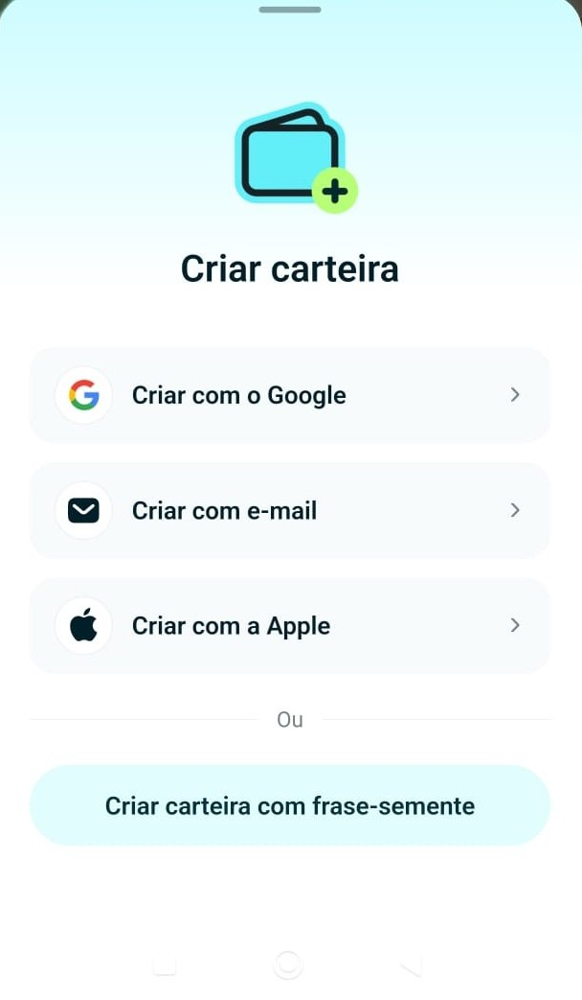
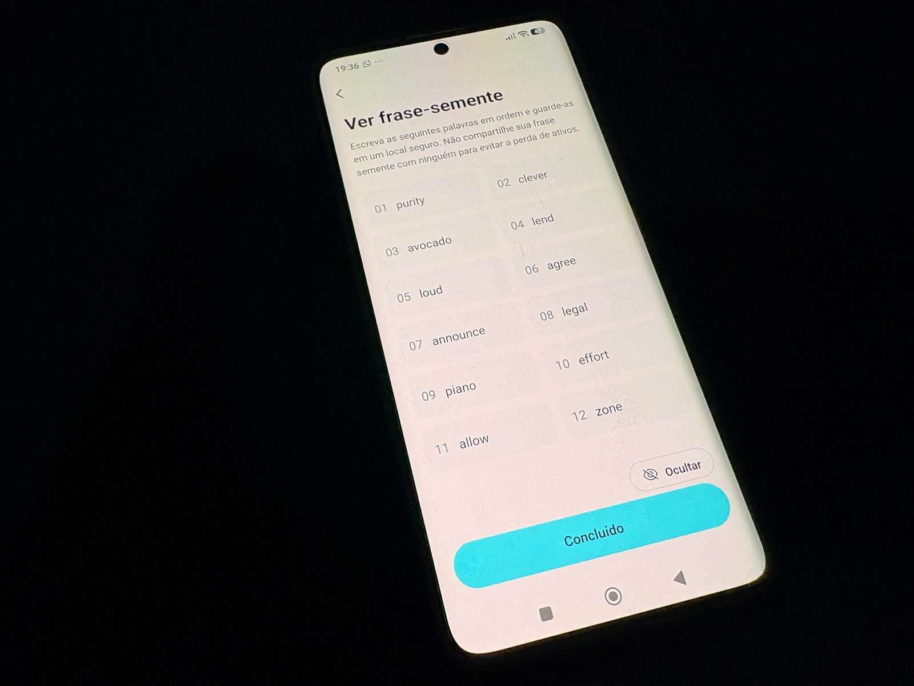
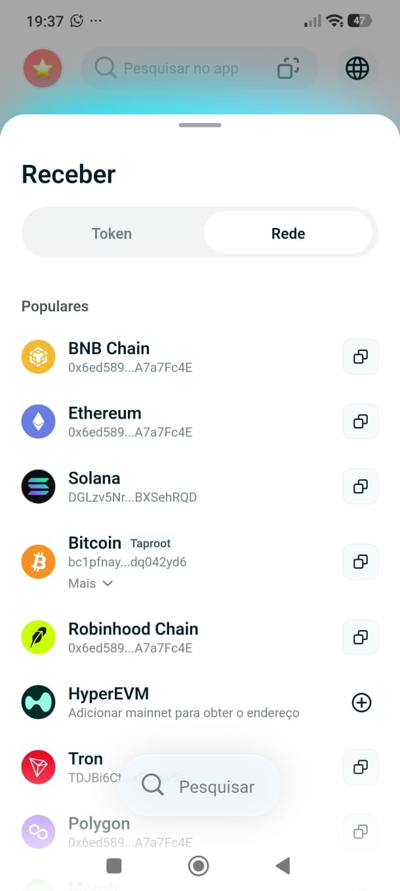
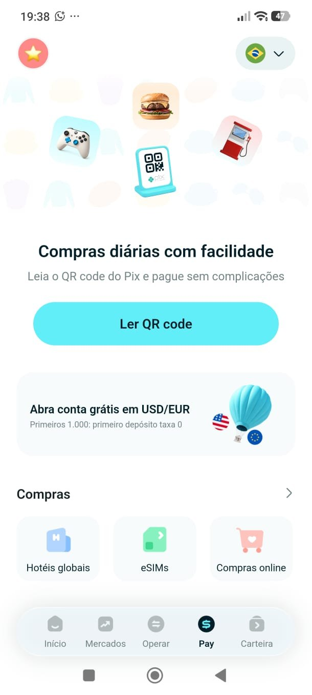
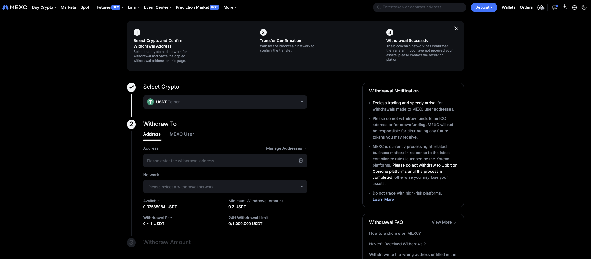

Introduction
In the previous lesson, your crypto stayed on an exchange, which means it stayed on a company's books. This lesson is about the other side: a wallet that only you control. You will see what a wallet really is, how to choose one, how to protect the recovery phrase, how to bring assets from an exchange to it, and how to start using it day to day.
The main example is Bitget Wallet, a self-custody wallet that also offers payments by QR code and its own card. It is an example, not a rule: the right wallet depends on the networks you use, and the later sections cover options for Solana and for EVM networks. The screens are placeholders for real screenshots, and every platform changes its menus over time.
By the end you will be able to explain what self-custody means, protect a recovery phrase correctly, withdraw from an exchange to your wallet without losing funds, and recognize the most common wallet scams.
Custody
A wallet does not store coins. Assets live on the blockchain, and the wallet stores the private keys that allow you to move them. Whoever has the keys controls the assets. In a custodial account, such as an exchange, the company holds the keys and you hold a claim. In a self-custody wallet, you hold the keys and nobody can freeze, block or approve your transfers.
Neither one is "the right one" for everything. A common approach is to keep on an exchange only what you are about to trade, and the rest in a wallet you control.
Types of Wallets
Wallets are usually grouped by how they connect to the internet and by who makes them.
Before installing any wallet, check:
- Who makes it, for how long, and whether the code is open or audited.
- Whether it supports the network and the tokens you want to use.
- Whether it is self-custody: you must receive a recovery phrase that only you hold.
- That the download comes from the official site or the official store page of the maker.
Recovery Phrase
When you create a self-custody wallet, it shows a recovery phrase (also called seed phrase), usually 12 or 24 words. That phrase is the wallet: anyone who has it can recreate your keys on another device and move everything.
A password or a PIN protects the app on one device. The recovery phrase protects the funds everywhere. After creating the wallet, send a small amount to it and practice restoring the wallet from the phrase on a clean install, so you know the backup works before it matters.
Bitget Wallet
Bitget Wallet is a multi-network self-custody wallet. Its main appeal for Brazilian users is that, besides storing and swapping assets, it connects the stablecoin balance to everyday payments. According to the company's announcements, this includes paying by QR code through Pix, a card that spends USDC and USDT, and buying stablecoins by bank transfer through a partner. Availability, eligibility and fees depend on your account and country and can change, so check the app before counting on any feature.
Do not confuse it with the Bitget exchange. The exchange is a custodial company, while the wallet is the self-custody app, even though they share a brand.
Download Bitget Wallet ↗ partner link
Step 1. Install and create the wallet
Install the app only from the official store page or the official site, then choose to create a new wallet. Set a local password or PIN. The app offers creating with Google, e-mail or Apple, or with a seed phrase. Here we follow the seed phrase, the path where you keep the recovery yourself.

- 1Download only from the official store page or site.
- 2Choose how to create it: with Google, e-mail or Apple (access goes through your account) or with a seed phrase (you keep the words). This guide follows the seed phrase path.
- 3Set the local password or PIN for this device.
Step 2. Back up the recovery phrase

- 1Make sure nobody and no camera can see the screen.
- 2Write the words on paper in the numbered order shown (01 to 12).
- 3Tap Done only after copying all 12 words. The app may ask you to confirm them next.
Step 3. Find your receiving address
To receive an asset, pick the asset and the network, then copy the address or show the QR code. The address is public and safe to share; the recovery phrase never is.

- 1Tap Receive and choose to browse by Token (the asset) or by Network.
- 2Find the network the sender will use, such as Ethereum, Solana or BNB Chain. It must be the same one.
- 3Tap the copy icon to copy the address for that network.
Everyday use: QR payments and card

- 1Open the wallet's Pay area.
- 2See what is available: scan a QR code, online purchases, eSIMs, hotels in many countries and other services. Options change over time and with your country.
- 3To pay a Pix, choose scan QR code, scan the merchant's code and check the amount in reais and in stablecoin before confirming.
Spending crypto also creates history: each payment uses an asset that has a date, an amount and a value in reais. Keep those records, as in the first lesson.
Wallets by Network
Wallets are not interchangeable across ecosystems. A Solana address and an EVM address have different formats, and the same recovery phrase can create accounts on different networks. The best wallet for you depends on where you will use your assets.
These are examples and not recommendations. Features and security of each wallet change, and the same rules apply to all of them: official download, protected phrase, and a test transfer before the real one.
Withdrawing to Your Wallet
Now you can bring assets from an exchange to your wallet. The order matters: start with the wallet, copy the address for the right network, and only then go to the exchange.

- 1Choose the asset you want to withdraw.
- 2Choose the network. It must be one that your wallet supports for that asset.
- 3Paste the address copied from your own wallet and compare the first and last characters.
- 4Enter the amount and check the network fee shown.
- 5Confirm with your security codes. Blockchain transfers cannot be undone.
- The network on the exchange and the network of the address must be the same. The same asset can exist on several networks, and sending on the wrong one can mean losing the funds.
- Compare the first and last characters of the address after pasting it. Some malware replaces copied addresses without you noticing.
- For the first withdrawal, send a small amount and confirm that it arrived. Then send the rest.
- Some exchanges let you save a list of allowed addresses. Turn it on after adding your own wallet.
Safety Checklist
Most wallet losses come from the user signing or revealing something, not from a break in the blockchain. These are the patterns that repeat.
Summary
- A wallet stores private keys, not coins. Whoever holds the keys controls the assets.
- Custodial accounts depend on a company. Self-custody gives full control and full responsibility.
- Software wallets are practical and more exposed. Hardware wallets keep keys offline and suit larger amounts.
- The recovery phrase is the wallet. Write it on paper, never digitize it, never share it, and test the restore.
- Bitget Wallet is an example of a wallet that connects the stablecoin balance to QR payments and a card, subject to availability and verification.
- Different ecosystems use different wallets: for example Phantom and Solflare for Solana, MetaMask and Rabby for EVM networks.
- When withdrawing from an exchange, match the network, compare the address, and test with a small amount first.
- Be careful with anyone asking for the phrase, with fake apps, with blind signatures and with look-alike addresses.
Glossary
- Private key
- The secret that lets you sign transactions and move assets.
- Recovery phrase
- A list of 12 or 24 words that can recreate the keys of a wallet. Also called seed phrase.
- Custodial
- A service where a company holds the keys for you.
- Self-custody
- Holding your own keys, with no company in between.
- Hot wallet
- A wallet whose keys live on a device connected to the internet.
- Hardware wallet
- A dedicated device that keeps keys offline and signs on the device.
- Address
- The public identifier where an asset can be received on a network.
- Network
- The blockchain on which a transfer happens. It must match between sender and receiver.
- EVM
- Ethereum Virtual Machine: the technology shared by Ethereum and compatible networks.
- Approval
- A signature that lets a contract spend a token from your wallet.
- Address poisoning
- A scam that plants look-alike addresses in your history.
Quiz
Check your understanding of this lesson before moving on. Incorrect answers point you straight back to the relevant section.
This quiz is for practice and does not grant a badge. Badges are earned by completing the modules of Crypto A to Z.
2. In a self-custody wallet, what happens if you lose the recovery phrase?
Correct, well done.
Not quite, review Custody and try again.
3. What is a main advantage of a hardware wallet?
Correct, well done.
Not quite, review Types of Wallets and try again.
4. Where is it acceptable to store a recovery phrase?
Correct, well done.
Not quite, review Recovery Phrase and try again.
5. Is the Bitget Wallet the same thing as the Bitget exchange?
Correct, well done.
Not quite, review Bitget Wallet and try again.
6. Which pairing is typical?
Correct, well done.
Not quite, review Wallets by Network and try again.
7. What can happen if you withdraw on a network your wallet does not support?
Correct, well done.
Not quite, review Withdrawing and try again.
8. What is a good practice for a first withdrawal?
Correct, well done.
Not quite, review Withdrawing and try again.
9. A "support agent" asks for your recovery phrase to fix a problem. What do you do?
Correct, well done.
Not quite, review Safety Checklist and try again.
You scored 0 out of 9 correct.